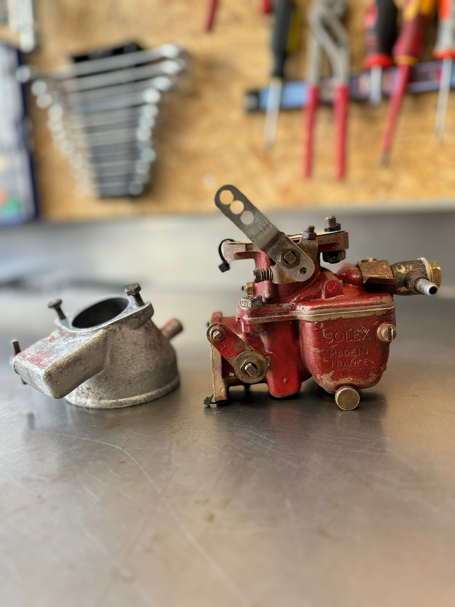

Wil je dat je boot het hele seizoen soepel blijft varen? Laat dan je marine carburateur professioneel onderhouden. Het bootseizoen is in volle gang en bij Carburateur Service Nederland merken we dat goed: we ontvangen momenteel veel aanvragen voor marine carburateur onderhoud, en dat is geen verrassing gezien de intensieve zomerse vaaractiviteiten.
Tien motormerken die op carburateurs draaien
De tien meest voorkomende motormerken die op carburateurs draaien zijn:
- Mercury Marine
- Yamaha Marine
- Honda Marine
- Volvo Penta
- Evinrude
- Suzuki Marine
- Tohatsu
- Cummins Marine
- MerCruiser
- Yanmar Marine
De carburateurs die we hierbij tegenkomen zijn onder meer Weber, Holley, Edelbrock, Carter, Zenith en Solex.
Wat is het probleem met water in de tank?
Een veelvoorkomend probleem bij boot carburateurs is de aanwezigheid van water in de brandstoftank door condensatie, wat het oxidatieproces versnelt. De vochtige maritieme omgeving leidt tot waterophoping in de tank, vooral als de boot niet regelmatig wordt gebruikt.
Water in de tank versnelt het oxidatieproces in de carburateur en kan leiden tot corrosie en verstoppingen. Dit veroorzaakt op zijn beurt motorproblemen, slechte prestaties en zelfs stilstand van je boot op het water, iets wat je natuurlijk wilt vermijden tijdens je zomertochten.
De rol van de marine carburateur
Marine carburateurs spelen een cruciale rol in het soepel laten draaien van de motor van je boot. Ze zorgen ervoor dat de juiste hoeveelheid brandstof gemengd wordt met lucht voor een optimale verbranding.
Onze gespecialiseerde diensten
Bij Carburateur Service Nederland bieden we gespecialiseerde diensten aan voor marine carburateurs. Onze experts lossen niet alleen bestaande problemen op, maar voeren ook preventief onderhoud uit zodat je motor het hele seizoen soepel blijft draaien. Zo maken we gebruik van vlotternaalden met een VITON-vlotternaald: een speciaal rubber dat goed omgaat met de nieuwere, slechtere benzinesoorten.
Van reiniging en afstelling tot reparatie en vervanging, wij staan klaar om je te helpen bij het optimaliseren van de prestaties van je boot.
Merk je dat je boot niet meer de kracht levert die hij zou moeten leveren, of wil je gewoon zeker zijn van een probleemloze vaarervaring? Neem dan contact met ons op voor een professionele inspectie van je marine carburateur. Voorkomen is altijd beter dan genezen, zeker als het gaat om de betrouwbaarheid en prestaties van je geliefde vaartuig.
Geniet van een zorgeloze zomer op het water, dankzij Carburateur Service Nederland, jouw partner in marine carburateur expertise.